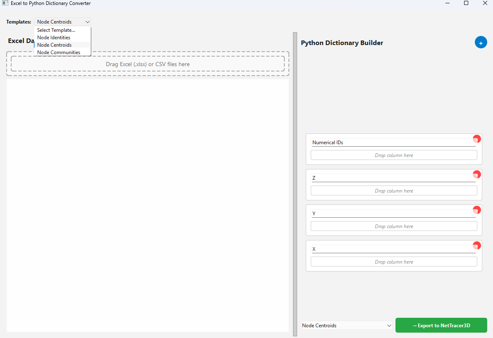
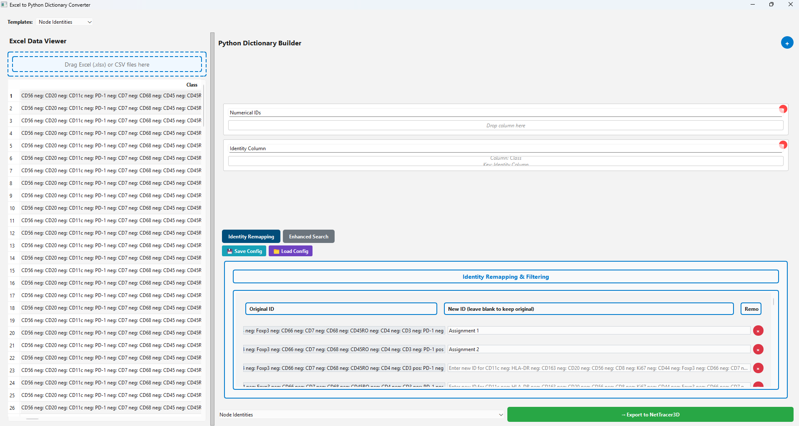
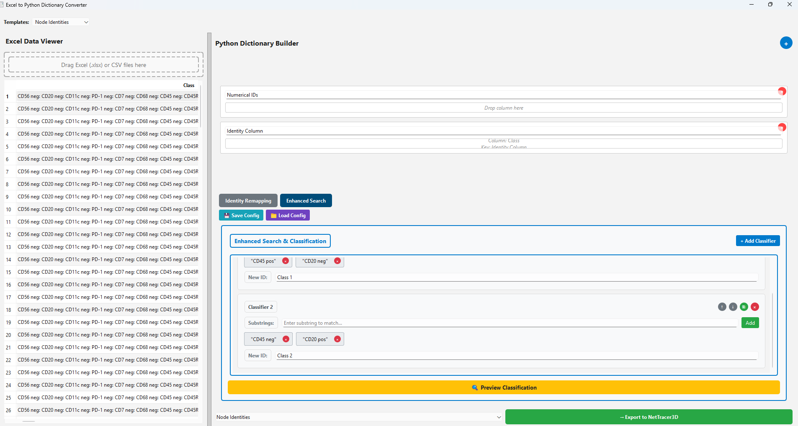
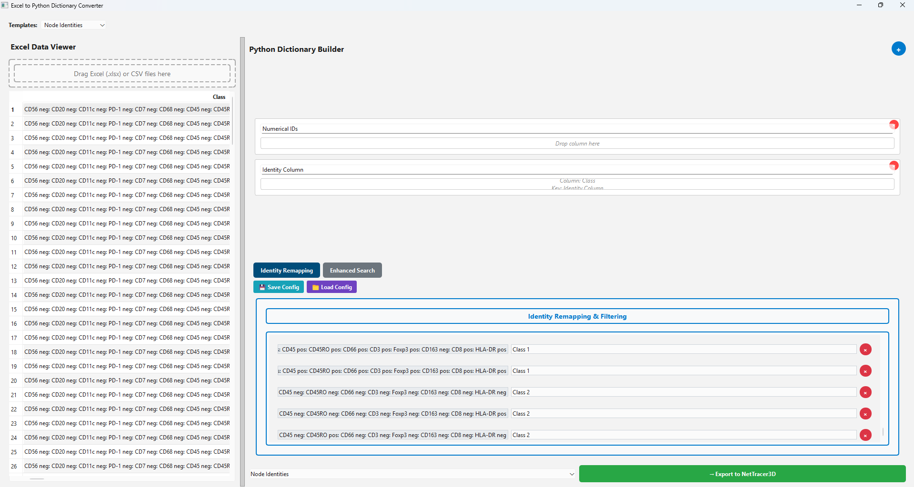

Using the Spreadsheet Loader
The excel helper is a small GUI for importing data from .xlsx or .csv
spreadsheets and converting it directly into NetTracer3D properties. It is
designed specifically for QuPath spreadsheet outputs — or those of similar
software such as Xenium — and for handling large numbers of cell phenotypes.
Opening the Excel Helper
Use File → Load → Load From Excel From Helper to open the tool:


Drag a spreadsheet onto the panel on the left marked Drag Excel (.xlsx) or CSV files here to open it in the widget. The tool expects data organised in columns, with column headers indicating what each entry refers to; row-organised data is not currently supported.
Use the Templates dropdown in the top left to open an entry on the right for building a NetTracer3D property. Only exports from these template designs are supported — custom exports are not implemented in the backend. Supported properties are Node Centroids, Node Identities, and Node Communities.
Each cell that appears on the right has a header, indicating what NetTracer3D expects the data placed there to refer to, and a lower box marked Drop Column Here. Once a spreadsheet has been imported, entire columns can be lifted and dropped into that space, telling NetTracer3D that the associated header refers to that column’s data. Columns must refer to the same object within a given row — for centroids, for example, the X and Y entries in a row must belong to the same cell.
Certain fields are auto-populated if left empty at export:
If Numerical IDs is not populated, for any property, IDs are assumed to begin at 1 and extend to the row length of the other columns.
For centroids, if Z is not populated, the data is assumed to be 2D and all Z values are assigned 1.
Reclassifying Node Identities
The Node Identities template additionally helps reclassify extracted, phenotype-organised data to NetTracer3D node IDs:


In this example, a QuPath-exported spreadsheet containing cell phenotypes has been opened on the left, and the Class data dragged into Identity Column on the right.
The widget in the bottom right assists with reassigning IDs. The original IDs, built from the unique set of the identity column, appear on the left. Under New ID in the middle are fields for the identities they should be reassigned to. Clicking the red X on the right instead excludes any objects associated with that original class from the export.
When ready, click Export to NetTracer3D in the bottom right. The command prompt window reports whether the export succeeded.
Enhanced Search
Where the number of unique class permutations is too large for manual assignment, click Enhanced Search:


Note
Using classifiers here is no longer the preferred way to reassign identities; this is now handled primarily through Process → Modify Network/Properties → Change/Remove Identities. The options below remain available, but importing identities directly and changing them in the GUI is recommended.
Enhanced search adds classifiers that sort through abundant strings to assign IDs to new classes automatically. After adding a classifier, enter in the substrings textbox the specific chunks of text to be assigned to a new class, where that text exists in any original ID in the identity remapping window.
The substring search is inclusive for all substrings added: any original ID
containing that exact group of substrings anywhere in its text, in any order, is
assigned a new ID by the classifier. Enter the target identity in the New ID
text window. In the example shown, original IDs containing both CD45 pos and
CD20 neg are assigned to Class 1, while the reverse is assigned to Class
2.
Hierarchal determines assignment order:
When checked, lower-numbered classes are assigned first — any original ID matching classifier 1 is reassigned first and is not considered by later classifiers. Categories with larger groups of specific markers, such as those matching multiple subphenotypes, should be given lower classifier numbers, while more specific subphenotypes are assigned later. Broad categories with less specific matches should likewise be assigned later.
When unchecked, nodes are assigned multiple identities.
Unmatched original IDs are discarded by default. To prevent this, place an empty classifier at the end of the classifier list to catch anything that does not match.
If no number column is dragged into the Numerical IDs area, IDs are assigned ascending labels starting from 1, overriding any current node labels in the program. Checking the small plus sign beside the export button instead appends auto-generated ascending labels to the current highest label, assuming nodes are already labeled.
Within a classifier, the up and down arrows change its position in the hierarchy, and the green copy button duplicates it — useful for creating a more stringent version.
Press Preview Classification to label all original IDs in the identity remapping window using the classifiers, then Identity Remapping to review how the original IDs have been assigned their new IDs. To start over, reload your data into the identity column.


Identity and classifier configurations can be saved to, and loaded from, a JSON file using the save and load buttons.
Next Steps
Next, read Available Keyboard Shortcuts for a summary of the available keyboard shortcuts.